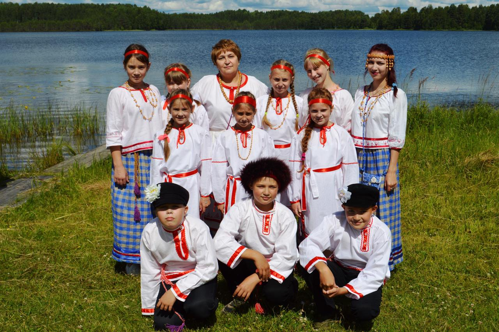

Это финно-угорский народ, говорящий на вепсском языке, как карелы на карельском. Это все, что точно известно. Остальное – предположения, о которых спорят этнографы.
Самоназвание народности – vepsä, vepsläižed, bepsä. В славянских летописях их называли «весь». Описывая поход князя Олега на Смоленск, летописец пишет, что правитель «взял с собой варягов, чудь, словен, мерю, весь и кривичей». Предполагают, что весь – это вепсы или одно из вепсских племен.

С вепсами отождествляют «народ бьярм», некогда населявший побережье Белого моря. Упоминание о бьярмах встречается у скандинавов. Неутомимый путешественник Оттар из Холугаланда во время странствий открыл богатую страну Биармию, населенную сильными колдунами, повелевающими стихиями. Об этом викинг писал своему нанимателю – королю Англии Альфреду Великому. Страна Биармия лежит к северу от Финляндии – государства финнов.
Предки вепсов жили на территории, простиравшейся от берегов Онежского озера на севере до Череповца на юге и Ладожского озера на востоке. По вепсским землям пролегал торговый путь «из варяг в греки». По речной системе вепсы мигрировали на северо-восток, заселяя север Новгородского княжества и Заволочье. Пришельцев назвали заволочской чудью. До 1917 года в документах Российской империи вепсы не выделялись в отдельную народность и обозначались как чудь.